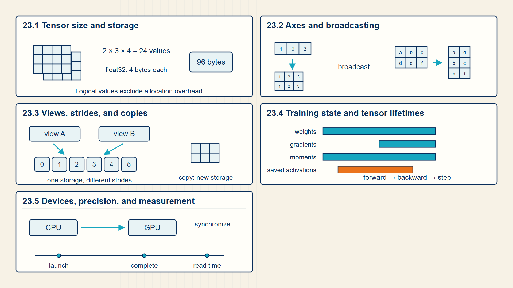
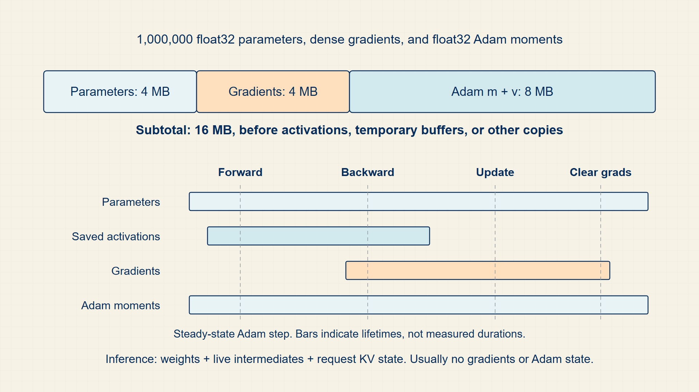
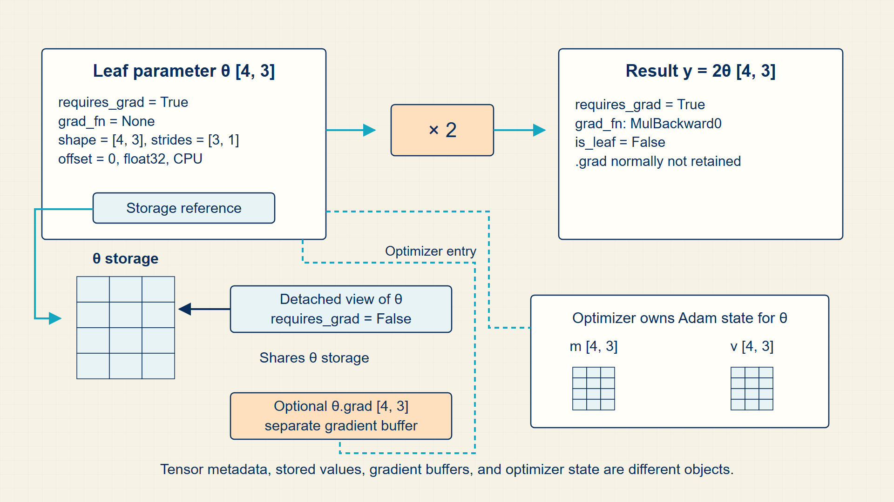

23 GPU Memory & Strides: Maximizing Tensor Throughput
The equations introduced so far run on arrays stored in computer memory. Tensor layout, dtype, device, and autograd determine how the same mathematical operation behaves in PyTorch.
The mathematical arrays used throughout the guide become tensors in code. Storage layout, views, devices, dtypes, autograd, and optimizer state explain why mathematically equivalent operations can have different memory and speed costs.
In code, torch.Tensor, dtype, device, view, reshape, transpose, autograd, and torch.optim are the concrete APIs behind the mathematical objects already used in the guide.
Chapter 23 develops one required stage of the guide’s computation.

The numbered panels correspond to the chapter sections and show how each local result supplies the next operation.
23.1 Structuring Contiguous Tensor Memory and Strides for GPU Cache Locality
A PyTorch tensor combines numerical values with dimensions, dtype, device, storage layout, and optional gradient history.
- Tensor: A typed, multidimensional array with dimensions, dtype, device, and storage layout.
- Dimensions: The length of each tensor axis, such as [batch, sequence, hidden].
- Dtype: The numerical type used to store each element, such as float32, bfloat16, int64, or bool.
Module 2 uses tensors first in PyTorch basics, then returns to them in embeddings, attention, and inference. A model bug is often a tensor-dimension bug: the wrong rank, the wrong device, or an unintended dtype.
The most useful habit is to name axes in prose before writing code. For example, logits in a language model commonly have dimensions [batch, sequence, vocabulary].
A PyTorch tensor represents continuous memory in GPU VRAM defined by dimension and stride tuples. View and transpose operations modify strides without copying data.
Calling .contiguous() reallocates memory to match logical layout when non-contiguous strides would impede fused CUDA kernel execution.
The number of stored values in a dense tensor is the product of its dimension sizes.
Tensor element count:
\[ \operatorname{numel}(X)=\prod_i d_i \tag{23.1}\]
where \(d_{i}\) is dimension size along axis i.
A dense tensor stores one value for every coordinate in the Cartesian product of its axes.
Element count is the first step in memory estimates.
Tensor memory depends on element count and dtype.
Tensor storage bytes:
\[ \mathrm{bytes}(X)=\operatorname{numel}(X)\cdot\mathrm{bytes\,per\,element} \tag{23.2}\]
Here, \(\mathrm{bytes\,per\,element}\) is the storage required for one value of the dtype.
Each dense element occupies the same number of bytes for a fixed dtype.
Real allocations may include overhead, but the value storage estimate comes from this product.
Example: Tensor element count
A tensor with dimensions [2,3,4] contains 24 elements.
Example: Tensor storage bytes
For dimensions 2 x 3 x 4 with float32 values, \(storage = 24\)·4 = 96 bytes.
Code example: PyTorch tensors carry dimensions, dtype, and device metadata.
import torch
x = torch.randn(4, 8, 16, dtype=torch.float32)
print(x.shape) # batch=4, sequence=8, hidden=16
print(x.dtype) # float32
print(x.device) # cpu unless moved to cudaThe output reports dimensions [4, 8, 16], dtype torch.float32, and the CPU device unless the tensor is explicitly moved.
The example does not allocate gradients because requires_grad is false. Storage layout and strides are examined in the later tensor-view section.
Storage layout affects how a kernel reads the same mathematical array. Vectorized operations then apply one rule to many examples at once.
23.2 Eliminating Explicit Loops with Vectorized Broadcasting
A tensor operation is valid only when its input axes satisfy the operation’s dimension contract.
- Batch axis: The axis that groups independent examples processed together.
- Sequence axis: The axis that orders tokens or time steps.
- Hidden axis: The learned representation width.
- Vocabulary axis: The axis of token scores in a language model output.
A linear layer maps the last dimension by multiplying with a weight matrix. A classifier may map [batch, hidden] to [batch, classes]. A decoder language model maps [batch, sequence, hidden] to [batch, sequence, vocabulary].
Attention adds an additional head axis. Common internal dimensions are [batch, heads, sequence, \(head_{dim}\)], where heads · \(head_{dim}\) equals the model width.
Linear layer dimensions:
\[ X\,[B,D_{\mathrm{in}}]\mathbin{@}W\,[D_{\mathrm{in}},D_{\mathrm{out}}]+b\,[D_{\mathrm{out}}]\to Y\,[B,D_{\mathrm{out}}] \tag{23.3}\]
where X is batch input matrix; W is linear-layer weight matrix; b is output bias.
The inner dimensions contract in matrix multiplication, leaving one output row per example and one column per output unit.
Dimension agreement is a mathematical precondition for the corresponding PyTorch operation.
Example: Linear layer dimensions
A 2 x 3 matrix multiplied by a 3 x 4 matrix produces a 2 x 4 matrix.
Broadcasting and matrix multiplication rely on compatible dimensions. Views and strides describe whether a rearrangement changes storage or only its interpretation.
23.3 Manipulating Tensor Strides and Views without Memory Copies
A tensor operation can change how data is interpreted without copying storage, or it can allocate a new storage block. The distinction matters for correctness in autograd and for memory use in larger models.
- View: A tensor that reinterprets the same storage with different dimensions or strides when possible.
- Copy: A tensor with newly allocated storage containing copied values.
- Stride: The step in storage needed to move along each axis.
- Device: The compute and memory location, usually CPU or a CUDA GPU.
The PyTorch notebooks emphasize basic creation, reshaping, and GPU movement. In LLM work, the same ideas scale up: embeddings, activations, attention scores, and KV cache blocks all have concrete storage and placement.
Moving a tensor to the GPU preserves the values and changes where the bytes live. The values are the same, but latency, memory limits, and valid operations change.
Moving a tensor from CPU to a CUDA GPU changes where its values and any following computation reside. A CPU input cannot be multiplied with a GPU parameter matrix, and a CUDA tensor cannot be passed directly to a CPU-only NumPy operation. Checking tensor.device beside dimensions and dtype makes this placement explicit before a matrix operation fails or forces an unintended copy.
Distributed training keeps a replica or a partition of model state on more than one accelerator. In data-parallel training, each GPU processes a different mini-batch. A communication step averages gradients across devices before each replica updates its weights. The mathematical gradient is still the average over the enlarged batch, but synchronization adds communication time and makes the parameter update depend on every participating device.
Mixed precision stores or computes selected tensors in lower precision to reduce memory traffic and increase throughput. It does not remove the need to preserve numerically sensitive operations: reductions, loss scaling, normalization statistics, and optimizer state may use a higher-precision representation. The dtype attached to each tensor is therefore part of the numerical method, not merely a storage preference.
A view can read the same storage with different dimensions and stride rule.
Strided address:
\[ \operatorname{offset}(i,j)=i\cdot\mathrm{stride}_0+j\cdot\mathrm{stride}_1 \tag{23.4}\]
where \(stride_{0}\),\(stride_{1}\) is storage jumps for the two axes.
The logical coordinate is converted into a storage offset using strides.
A transpose can change strides without copying values.
Example: Strided address
For stride [3,1], coordinate (1,2) has offset \(1·3+2·1=5\).
reshapemay return a view or a copy depending on layout.viewrequires compatible contiguous layout.to(device)creates or returns a tensor on the requested device.detachbreaks the autograd history and should be used deliberately.
Autograd records differentiable operations over those tensors and later accumulates gradients for trainable parameters.
23.4 Tracking Autograd Computation Graphs and Optimizer Memory
Training keeps several classes of tensors alive at once. Separating these classes connects the math guide to the performance guide, because each class has different lifetime and memory behavior.
- Parameter: A learned tensor updated by the optimizer, such as a weight matrix or bias vector.
- Activation: An intermediate forward-pass tensor produced by a layer.
- Optimizer state: Extra tensors used by an update rule, such as Adam first and second moments.
At inference time, parameters and some activations are still needed, but gradients and optimizer state usually disappear. During training, activations may be retained so the backward pass can compute gradients.
Embeddings, logits, loss, and KV cache are also tensors, but they play different roles. An embedding is a learned lookup table, logits are unnormalized scores, loss is a scalar objective, and KV cache stores reusable attention keys and values during decoding.
Computation map
The computation starts with persistent and produces serving state through the intermediate objects shown below.

The output of persistent is the input required by serving state; the intermediate stages name the stored objects that make the transition possible.
PyTorch stores a parameter gradient in a tensor with the same dimensions as the parameter.
Gradient buffer dimensions:
\[ \operatorname{dims}(\mathrm{param.grad})=\operatorname{dims}(\mathrm{param}) \tag{23.5}\]
where param is trainable parameter tensor; param.grad is accumulated gradient buffer.
Each parameter value needs one derivative of the scalar loss with respect to that value.
The optimizer can update parameters coordinate by coordinate because dimensions match.
Adam stores two moving-average tensors for each parameter tensor.
Adam state tensors:
\[ \operatorname{state}_{\mathrm{Adam}}(\mathrm{param})=\{m,v\},\quad\operatorname{dims}(m)=\operatorname{dims}(v)=\operatorname{dims}(\mathrm{param}) \tag{23.6}\]
where m is first-moment buffer; v is second-moment buffer.
Adam tracks a mean-like and square-mean-like statistic for every parameter coordinate.
Optimizer state can exceed the parameter memory during training.
Example: Gradient buffer dimensions
A linear weight with dimensions [4,3] receives a .grad tensor with dimensions [4,3].
Example: Adam state tensors
A parameter with 1M values needs 2M additional Adam state values.
Autograd and optimizer state provide the code-level form of the chain rule and parameter updates. Library APIs package those operations without changing the underlying mathematics.
23.5 Mapping Mathematical Formulations to Native PyTorch APIs
PyTorch names are implementation handles for mathematical tensors, modules, losses, gradients, and optimizer state.
A tensor stores an array with dimensions, dtype, device, layout, and sometimes gradient metadata. A module stores parameter tensors and defines a forward computation. A loss function reduces model outputs and targets to a scalar objective.
PyTorch code maps directly to math. input_ids are token-index tensors, and an embedding layer is a row lookup table. Logits are unnormalized scores, loss.backward() accumulates gradients, and an optimizer updates parameter storage.
PyTorch is introduced here as the notation-to-execution layer. A mathematical matrix becomes a floating-point tensor. An embedding table becomes torch.nn.Embedding. A loss becomes a function such as cross_entropy, and a gradient update becomes optimizer.step().
Tensor dimensions determine valid operations, and dtypes set numeric precision. Devices control where data is stored, while autograd tracks operations to differentiate the loss.
A device and dtype choice determines where the same tensor operation executes and how much precision it uses.
23.6 Running the Same Tensor Computation on a GPU
GPU execution changes the placement and parallel scheduling of tensor operations while preserving the mathematical function computed by the model.
- CUDA device: A GPU execution and memory target selected by PyTorch, commonly written as
cuda:0. - Data parallelism: Training in which several devices process different mini-batches and combine gradients for shared parameters.
- Mixed precision: Using more than one floating-point dtype so selected operations use less memory or faster hardware paths.
The first device invariant is simple: model parameters, input tensors, and tensors created during the forward pass must be on compatible devices. Moving only the input to a GPU leaves a CPU model behind; moving only the model leaves CPU inputs behind. A device choice should therefore be made at the boundary where a batch enters the model and applied consistently to both objects.
Data-parallel training repeats the forward and backward pass on separate mini-batches. Each device obtains a gradient for the same parameter names, then an all-reduce operation averages or sums the gradient tensors before the optimizer updates the replicas. It raises effective batch size and throughput when compute is the bottleneck, but communication can dominate when gradients are large or each local batch is too small.
Mixed precision is most useful when activations and matrix multiplications consume substantial memory bandwidth. Lower-precision values reduce storage and can use specialized hardware, while selected reductions, optimizer state, and numerically sensitive calculations remain in a safer dtype. The practical check is not merely that a program runs, but that loss values, gradients, and evaluation behavior remain stable.
Code example: Moving a model and its batch to one device
import torch
import torch.nn as nn
# The same code runs on a GPU when CUDA is available and on CPU otherwise.
device = torch.device("cuda" if torch.cuda.is_available() else "cpu")
model = nn.Linear(3, 2).to(device)
features = torch.tensor([[1.0, 0.0, -1.0]], device=device)
logits = model(features)
assert logits.device == features.device == next(model.parameters()).device
print(device, logits.shape)The model and feature batch share one device, so the linear operation has a valid placement.
This CPU-safe fallback verifies placement mechanics; a GPU run additionally exercises CUDA kernels.
The labs combine these data objects, operations, and checks into complete computations.
23.7 Tensor storage and autograd trace
A PyTorch tensor is a small object that describes a block of numerical storage. The numbers matter, but so do the metadata: dimensions, dtype, device, stride, storage offset, and autograd state. Most implementation bugs in later chapters are tensor-dimension bugs: the numbers might be reasonable, but the axes, dtype, or device are not what the operation expects.
The useful habit is to inspect tensors as they move. After each operation, ask what changed: did the dimensions change, did the dtype change, did the tensor move between CPU and GPU, did it become a view, and did it acquire a \(\nabla_{fn}\)? That is the practical object model behind the course notebooks.
A tensor is both numerical data and metadata: dimensions, dtype, device, layout, and gradient tracking travel with the values.

The stored values determine the numerical result; dimensions, dtype, device, layout, and gradient state determine which operations can execute and how training records them.
A tensor is an indexed array plus metadata that determines which operations are valid. Dimensions, dtype, device, stride, contiguity, and requires_grad must match the operation being applied. Operations create new tensors, views, or copies while preserving enough metadata for later kernels and gradients.
In PyTorch, torch.Tensor, .shape, .dtype, .device, .stride(), .view(), .reshape(), and .to(device) expose the object model.
Performance note: Non-contiguous layout and CPU/GPU transfers can dominate simple arithmetic even when the formula is small.
Example: Tensor metadata example
Create x with dimensions [2,3] on CPU and dtype float32.
A transpose changes logical axes to [3,2] and usually changes stride without copying values.
Calling .contiguous() allocates storage in row-major order so later kernels can read adjacent values efficiently.
Key calculations
Strided access:
\[ \mathrm{storage\,index}=\mathrm{storage\,offset}+i\cdot\mathrm{stride}_0+j\cdot\mathrm{stride}_1 \tag{23.7}\]
Matrix multiplication dimension rule:
\[ [B,D]\mathbin{@}[D,H]\to[B,H] \tag{23.8}\]
Dimension trace
These dimensions appear in the computation in order.
- Vector: [D], one feature vector or one embedding.
- Batch matrix: [B, D], B examples with D features.
- Token batch: [B, T], B tokenized sequences of length T.
- Embedding batch: [B, T, E], one E-dimensional vector per token.
- Parameter matrix: \([\mathrm{input\,features},\mathrm{output\,features}]\), or its framework-specific transpose.
PyTorch implementation notes
- Print
x.shape,x.dtype,x.device,x.stride(),x.is_contiguous(), andx.requires_gradduring walkthroughs. - Use
x.to(device)consistently; CPU tensors and GPU tensors cannot participate in the same arithmetic operation. - Do not assume reshape is free or that view can always work; layout determines whether a view is possible.
It should now be clear how to explain why two tensors with the same printed values can behave differently because of dtype, device, layout, or autograd metadata.
PyTorch is the storage and execution layer for the mathematical objects already introduced.
Notebook labs check the math, tensor dimensions, code paths, and performance consequences.